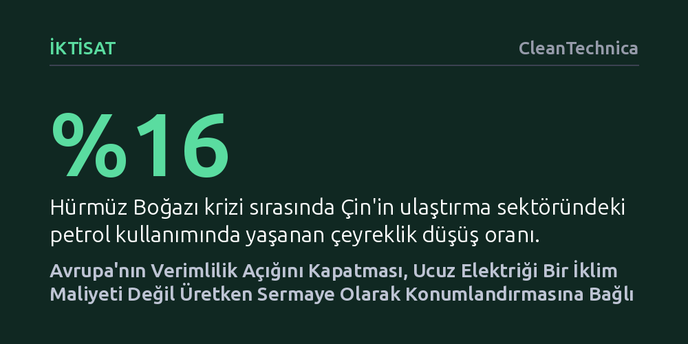

IKTISAT · CleanTechnica · 2026-09-08
Avrupa'nın kronik verimlilik açığı, tekrarlanan fosil yakıt ithalatı yerine kalıcı elektrik sermayesine yapılacak yatırımla hafifletilebilir. Fabrikaya ulaşan ucuz elektrik tek başına tüm sorunları çözmese de sanayi verimliliği ve otomasyonun vazgeçilmez temelidir.
Elektrifikasyonun yalnızca bir çevre ve iklim maliyeti değil, fosil yakıt bağımlılığını kırarak sanayi verimliliğini ve otomasyonu güçlendiren kalıcı bir sermaye yatırımı olduğunu gösterir.

2026 yılındaki Hürmüz Boğazı gerilimi küresel petrol piyasalarını sarstığında, Çin beklenmedik bir dayanıklılık sınavı verdi. Yılın ikinci çeyreğinde ülkenin genel petrol tüketimi yaklaşık yüzde 9, taşımacılık kaynaklı petrol kullanımı ise yüzde 16 oranında geriledi. Geleneksel bir ekonomide böylesi sert bir daralma lojistiğin kilitlenmesi anlamına gelirdi; oysa Çin’de yolcu trafiği, demiryolu kullanımı ve yük taşımacılığı artışını sürdürdü. Kuşkusuz bu düşüşün tamamını elektrifikasyona bağlamak doğru olmaz; inşaat sektöründeki yavaşlama, stok yönetimi ve toplu taşıma tercihleri de etkiliydi. Ancak Carbon Brief analizinin ortaya koyduğu asıl gerçek, elektrikli sermaye stokunun sağladığı korumaydı: Elektrikli otomobiller ve kamyonlar, yalnızca petrole dayalı bir ulaşım altyapısının asla sunamayacağı bir esneklik ve uyum mekanizması yarattı.
Avrupa ise 2022 yılındaki doğal gaz şokunun ardından bunun neredeyse tam tersi bir süreçten geçti. Uluslararası Para Fonu’nun (IMF) yönlendirilmiş teknik değişim üzerine yayımladığı çalışma, krizin Avrupa sanayisinde bıraktığı derin izi gözler önüne seriyor. Gaz fiyatları fırladığında şirketler rasyonel bir refleksle sermayelerini, yönetim kapasitelerini ve Ar-Ge bütçelerini daha az enerji harcamaya yönelttiler. Bu hamle sayesinde işletmeler enerji verimliliklerini yaklaşık yüzde 3 artırarak akut hasarı hafifletti; fakat bu durum çok ağır bir fırsat maliyeti doğurdu. Normal şartlarda ana iş kollarını geliştirmeye, dijitalleşmeye ve genel verimliliği yükseltmeye gidecek olan kaynaklar sadece hayatta kalmaya harcandı. Enerji fiyatları daha sonra kriz öncesi seviyelere yaklaşsa da, verimlilikteki kayıp kalıcı oldu: IMF tahminlerine göre şokun etkisi, Euro Bölgesi’nin potansiyel milli gelirini 2027 itibarıyla olması gereken seviyenin yaklaşık yüzde 0,8 altında tutacak.
Bu iki deney, Avrupa’nın yeşil dönüşüm tartışmalarında sıklıkla gözden kaçırdığı yalın bir iktisadi gerçeği aydınlatıyor: Fosil yakıtlara dayalı bir ekonomi, aslında bitmek bilmeyen bir "sürekli satın alma" döngüsüdür. Petrol ve doğal gaz yer altından çıkarılır, işlenir, taşınır ve bir kere yakılıp yok olur. Tüketilen her varilin veya metreküpün ardından ekonominin çarklarını döndürmek için yabancı bir üreticiye yeni bir ödeme yapmak zorundasınızdır.
Elektrifikasyon ise bu harcama modelini kökten değiştirerek parayı kalıcı ve üretken bir sermaye stokuna dönüştürür. Rüzgar türbinleri, iletim hatları, bataryalar, elektrik motorları ve ısı pompaları elbette ilk yatırım sermayesi, hammadde ve düzenli bakım gerektirir; fakat yarın esecek rüzgar ya da doğacak güneş için başka bir ülkeye fatura ödemezsiniz. Dahası, elektrik motorları ve ısı pompaları enerjiyi işe dönüştürme konusunda içten yanmalı sistemlerden katbekat daha verimlidir. Bu donanımlar sensörlerle, yazılımlarla ve otomasyonla doğal bir uyum içindedir. Nüfusu hızla yaşlanan ve işgücü açığı büyüyen bir Avrupa için enerjiyi doğrudan otomasyona bağlayabilmek muazzam bir üretkenlik kaldıracı sunar.
Avrupa’nın karşı karşıya olduğu asıl tuzak, ucuz elektrik üretimi ile sanayicinin kapısına teslim edilen ucuz elektriği birbirine karıştırmaktır. Yenilenebilir enerji santralleri kurup kağıt üzerinde ucuz megavat-saatler üretmek, tek başına bir rekabet avantajı sağlamıyor. Uluslararası Enerji Ajansı’nın (IEA) Electricity 2026 fiyat analizi, Avrupa’nın yüksek enerji tüketen sanayi kuruluşlarının 2025 yılında Amerikan rakiplerine kıyasla yaklaşık iki kat, Çinli rakiplerine kıyasla ise yüzde 50 daha pahalı elektrik faturası ödediğini belgeliyor.
Bu fiyat uçurumu; alüminyum, temel kimyasallar, gübre, çelik, cam ve kağıt gibi sektörler için ölüm kalım meselesidir. Ucuz elektriğin katma değere dönüşebilmesi, elektronların güvenilir ve düşük maliyetle ihtiyaç duyulan üretim merkezlerine ulaştırılmasına bağlıdır. Burada düğüm noktası şebeke altyapısıdır: Sınır ötesi enterkonneksiyon hatları, depolama tesisleri, esnek talep yönetimi ve doğru piyasa mekanizmaları kurulmadığı sürece üretimdeki maliyet avantajı fabrikaya yansımaz. Nitekim Fransa’nın nükleeri, İskandinavya’nın hidroliği, İberya’nın güneşi ve Kuzey Denizi’nin rüzgarı ancak kıta genelinde serbestçe akabildiği zaman her ülkenin aynı pahalı enerji portföyünü kendi içinde kopyalama zorunluluğu ortadan kalkar.
Elbette ucuz elektrik Avrupa'nın bütün dertlerine deva olacak sihirli bir değnek değildir. Mario Draghi’nin rekabet raporunda da vurgulandığı üzere, kıtanın ortak pazar reformlarına, derin sermaye piyasalarına, araştırma-geliştirmeyi ticarileştirme becerisine ve küresel ölçekte büyüyebilecek şirketlere olan ihtiyacı devam ediyor. Yazılım şirketleri ya da bankacılık sektörü için elektrik fiyatları ana belirleyici faktör değildir; dolayısıyla tüm verimlilik açığını yalnızca enerjiye bağlamak yanıltıcı olur.
Bununla birlikte, ekonomisini döndürmek için tükettiği yakıtın ezici bölümünü dışarıdan alan yaşlı bir kıtanın, elektrifikasyonu sadece sırtında bir "iklim uyum maliyeti" gibi görmeyi bırakması gerekiyor. Fabrikaların ve işletmelerin kolayca erişebildiği bol ve rekabetçi elektrik; enerji verimliliğini artırır, işgücü daralmasını otomasyonla telafi eder, jeopolitik şoklara karşı bağışıklık kazandırır. En önemlisi de batarya, güç elektroniği, şarj altyapısı ve elektrikli motorlarda Avrupa’nın ihtiyaç duyduğu büyük iç pazarı yaratarak sanayiyi küresel ölçeğe taşır. Ucuz elektrik Avrupa'nın tek verimlilik stratejisi olamaz; fakat üzerine inşa edileceği en sağlam zemindir.